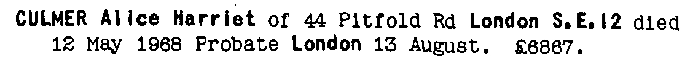

Alice Harriet Culmer 1880 - 1968
[ Home ] | [ Calendar ] | [ Surnames Index ] | [ Census Index ] | [ Family History ]A domestic general servant and the child of Charles Culmer (a coal dealer) and Mary Lawrence, Alice Culmer, the second cousin twice-removed on the mother's side of Nigel Horne, was born in Faversham, Kent, England on Jun 29, 18801,2,3,4 and baptized there on Jul 21, 1880.
During her life, she was living at 56 Tanners Street in Faversham on Apr 3, 18811 and on Apr 5, 18912; at Blackheath Hill, Lewisham, London, England on Mar 31, 19017; at Elmside, Dartmouth Place in Lewisham on Apr 2, 19116; at 19 Bromley Common, Bromley, Kent, England on Sep 29, 19393; and at 44 Pitfold Road, Lee, London in 1968.
She died on May 12, 1968 in Lewisham5.
Parents
- Charles was born c. Nov 1855
- Mary Ann was born on Jan 23, 1853
Citations
- 1881 England, Wales & Scotland Census - Findmypast (was age 0 and the daughter of the head of the household)
- 1891 England, Wales & Scotland Census - Findmypast (was age 10 and the daughter of the head of the household)
- 1939 Register - Findmypast (was recorded at this address)
- England & Wales births 1837-2006 - Findmypast
- England & Wales deaths 1837-2007 - Findmypast
- 1911 Census for England & Wales - Findmypast (was age 30 and a servant in the household)
- 1901 England, Wales & Scotland Census - Findmypast (was age 20 and a servant in the household)
Media
Alice Culmer - probate

England & Wales births 1837-2006 - BMD/B/1880/3/AZ/000133/232
1911 Census for England & Wales - GBC/1911/RG14/02731/0069/4
1901 England, Wales & Scotland Census Transcription - GBC-1901-0006489577
1939 Register Transcription - TNA-R39-1238-1238I-041-32
England & Wales deaths 1837-2007 Transcription - BMD-D-1968-2-AZ-000199-010
Family Tree

Generated by ged2site. Last updated on Jun 11, 2024